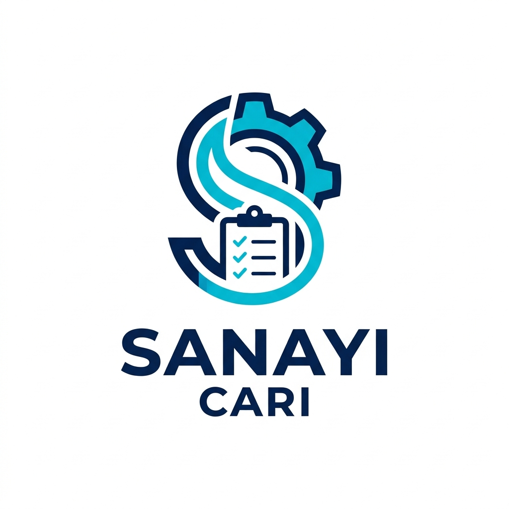

Otomotiv Dünyası İçin Dijital Devrim
Sanayinin Yeni Nesil
Akıllı Cari Takip Sistemi
Tamirhaneler, yedek parçacılar ve tüm sanayi esnafı için geliştirilen Sanayi Cari ile borç-alacak takibi artık çocuk oyuncağı. Cebinizde, tabletinizde ve bilgisayarınızda!